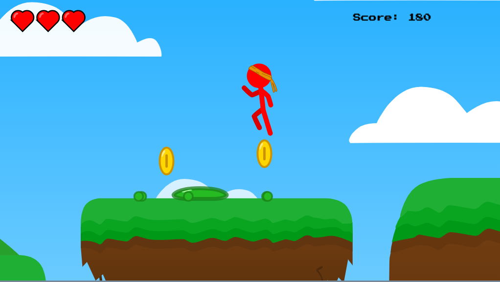

This project can take a phone number and convert it to a certain format type.
This project yields responses just like a normal Magic 8 Ball when clicked.
This project is a platformer game made with JavaScript in an html canvas. I drew the graphics myself and got the sounds from free online sources.
Web Design 2 has brought both difficult challenges and exciting discoveries. In Web Design 2, I've been learning how to use JavaScript in html. With JavaScript, one can change html elements and styles, create games, and more. In trying to implement JavaScript into websites, I have often gotten stuck. But by research and aid from my teacher, I overcame those challenges and was able to proceed with new knowledge and experience.
Of all the things I learned from this class, my favorite was how to use the html canvas and JavaScript to make computer games. I already had experience creating games, so once I learned how it worked in JavaScript, it wasn't that hard, and I had a good time making some cool games.
Looking back at all that I learned and accomplished in this class, I don't regret an ounce of it. I am proud of the projects I've made with this new knowledge, and I don't doubt that I will use it many times in the future.